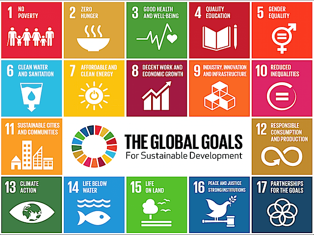
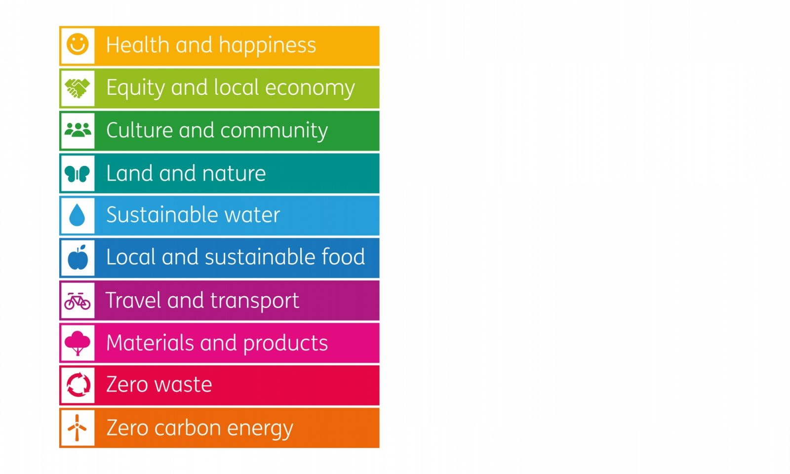

Our Mission
A sustainable business is an enterprise that has minimal negative impact on the environment and takes certain
steps towards having a more positive effect on the local or global communities, societies and economies.
Sustainable businesses are often referred to as green business which cluster under different groups, the
uprising of which is considered "green capitalism".
Our goal at MudoTerra is to help businesses and individuals to work and live in a sustainable way.
Green businesses have progressive environmental and human rights policies. Those are most commonly companies
that amongts other:
- incorporate principles of sustainability into each business decisions;
- supply environmentally friendly products or services;
- replace nongreen products and/or services;
- incorporate environmental principles in its business operations.
The image below shows the world sustainability goals. We believe that everyone should contribute into achieving
them.
Get in touch with us today to learn how you can become part of this journey and live or work in a more
sustainable way.
 